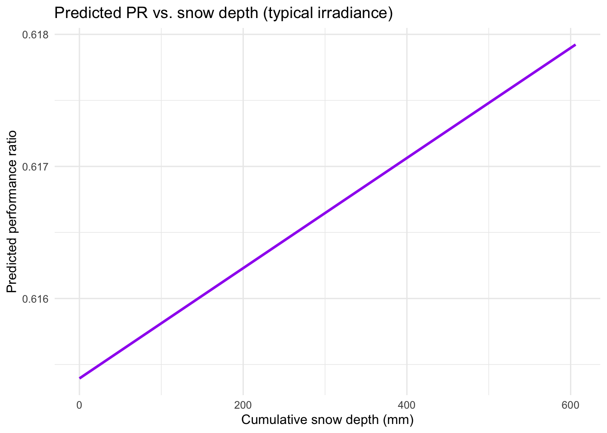

library(tidyverse)
library(readxl)
library(janitor)
library(betareg)
library(broom)
library(kableExtra)
library(dagitty)
# Load data
oedi_data <- read_excel("data/oedi_data.xlsx", sheet = "data") |>
clean_names()Snow and Irradiance Effects on PV Performance (Beta Regression)
Purpose
This blog post builds on Jackson & Gunda’s (2021) machine learning analysis of United States solar systems, who showed how weather events, especially snow, can reduce photovoltaic (PV) performance measured as PR (performance ratio). This analysis uses a simple beta regression to link daily performance ratio (PR) to cumulative snow depth, low-irradiance conditions, and basic solar plant age/region effects.
Reference:
Jackson, N. D., & Gunda, T. (2021). Evaluation of extreme weather impacts on utility-scale photovoltaic plant performance in the United States. Applied Energy, 302, 117508. https://doi.org/10.1016/j.apenergy.2021.117508
Hypothesis
After accounting for plant age and regional differences, cumulative snow depth and low-irradiance will reduce the performance ratio (PR) of photovoltaics.
Setup
Data wrangling
PR must be strictly between 0 and 1 for beta regression. We drop rows with missing inputs and slightly reduce 1s.
notzero <- 1e-4 # Basically 0
beta_df <- oedi_data |>
mutate(
region = factor(noaa_clim_region),
date = as.Date(date),
pr_beta = pmin(pmax(pr, notzero), 1 - notzero)
) |>
drop_na(region, date, pr_beta, cumulative_snow_mm, low_irradiation, plant_age_months) |>
select(region, date, pr_beta, pr, cumulative_snow_mm, low_irradiation, plant_age_months)
glimpse(beta_df)Rows: 37,604
Columns: 7
$ region <fct> West, West, West, West, West, West, West, West, Wes…
$ date <date> 2018-04-01, 2018-04-02, 2018-04-03, 2018-04-04, 20…
$ pr_beta <dbl> 0.8259221, 0.7884559, 0.7735239, 0.7986374, 0.78721…
$ pr <dbl> 0.8259221, 0.7884559, 0.7735239, 0.7986374, 0.78721…
$ cumulative_snow_mm <dbl> 0, 0, 0, 0, 0, 0, 0, 0, 0, 0, 0, 0, 0, 0, 0, 0, 0, …
$ low_irradiation <dbl> 0, 0, 0, 0, 0, 0, 0, 0, 0, 0, 0, 0, 0, 0, 0, 0, 0, …
$ plant_age_months <dbl> 19, 19, 19, 19, 19, 19, 19, 19, 19, 19, 19, 19, 19,…DAG (drivers we adjust for)
pr_dag <- dagitty("
dag {
Region -> Snow
Region -> LowIrr
Region -> PR
PlantAge -> PR
Snow -> PR
LowIrr -> PR
}
")
plot(pr_dag)
Region can affect weather and baseline PR, snow and low irradiance directly affect PR, plant age captures aging machinery effects.
Model concept
Beta regression with logit link:
logit(μ) = β0 + β1·Snow + β2·LowIrr + β3·Age + Region effects
PR ~ Beta(μ, φ)
Fit beta regression
beta_fit <- betareg(
pr_beta ~ cumulative_snow_mm + low_irradiation + plant_age_months + region,
data = beta_df,
link = "logit"
)
beta_fit
Call:
betareg(formula = pr_beta ~ cumulative_snow_mm + low_irradiation + plant_age_months +
region, data = beta_df, link = "logit")
Coefficients (mean model with logit link):
(Intercept) cumulative_snow_mm low_irradiation
5.555e-01 1.764e-05 -1.084e+00
plant_age_months regionNorthwest regionOhio Valley
-4.214e-03 -1.562e+00 1.377e-01
regionSoutheast regionSouthwest regionUpper Midwest
1.751e-01 -1.432e+00 -3.457e-01
regionWest
1.041e-01
Phi coefficients (precision model with identity link):
(phi)
1.413 Coefficients (tidy)
coef_tbl <- tidy(beta_fit) |>
select(term, estimate, std.error, statistic, p.value)
coef_tbl |>
kable(digits = 3, caption = "Beta regression on PR") |>
kable_styling(full_width = FALSE)| term | estimate | std.error | statistic | p.value |
|---|---|---|---|---|
| (Intercept) | 0.556 | 0.026 | 21.506 | 0.000 |
| cumulative_snow_mm | 0.000 | 0.000 | 1.017 | 0.309 |
| low_irradiation | -1.084 | 0.015 | -70.133 | 0.000 |
| plant_age_months | -0.004 | 0.000 | -13.892 | 0.000 |
| regionNorthwest | -1.562 | 0.045 | -34.906 | 0.000 |
| regionOhio Valley | 0.138 | 0.044 | 3.134 | 0.002 |
| regionSoutheast | 0.175 | 0.024 | 7.256 | 0.000 |
| regionSouthwest | -1.432 | 0.037 | -38.410 | 0.000 |
| regionUpper Midwest | -0.346 | 0.047 | -7.347 | 0.000 |
| regionWest | 0.104 | 0.022 | 4.836 | 0.000 |
| (phi) | 1.413 | 0.009 | 162.089 | 0.000 |
The most impactful predictor is low irradiation, which is associated with a large, highly significant decrease (a logit shift of -1.084) in the logit of PR. Plant age also significantly drives PR lower as it increases (\(\text{logit}(\text{PR})\) decreases by \(0.004\) per month). For comparison, the amount of cumulative snow is not a statistically significant predictor of PR in this model (\(p=0.309\)).
Effect of snow depth (holding other factors)
region_ref <- beta_df |>
count(region, sort = TRUE) |>
slice(1) |>
pull(region)
snow_grid <- tibble(
cumulative_snow_mm = seq(0, quantile(beta_df$cumulative_snow_mm, 0.95, na.rm = TRUE), length.out = 100),
low_irradiation = 0,
plant_age_months = median(beta_df$plant_age_months, na.rm = TRUE),
region = factor(region_ref, levels = levels(beta_df$region))
)
snow_grid <- snow_grid |>
mutate(pred_pr = predict(beta_fit, newdata = snow_grid, type = "response"))
snow_grid |>
ggplot(aes(cumulative_snow_mm, pred_pr)) +
geom_line(color = "purple", linewidth = 1) +
labs(
title = "Predicted PR vs. snow depth (typical irradiance)",
x = "Cumulative snow depth (mm)",
y = "Predicted performance ratio"
) +
theme_minimal()
Results
Our Beta regression model partially supported the hypothesis that cumulative snow depth and low-irradiance would reduce photovoltaic performance. Low-irradiance days were significantly associated with a reduction in the log-odds of the Performance Ratio (PR). While the coefficients for cumulative snow depth also suggested a negative impact on PR after accounting for plant age and regional baselines, this effect was not statistically significant. Therefore, the primary driver supporting our hypothesis was the significant negative impact of low-irradiance conditions on photovoltaic performance.